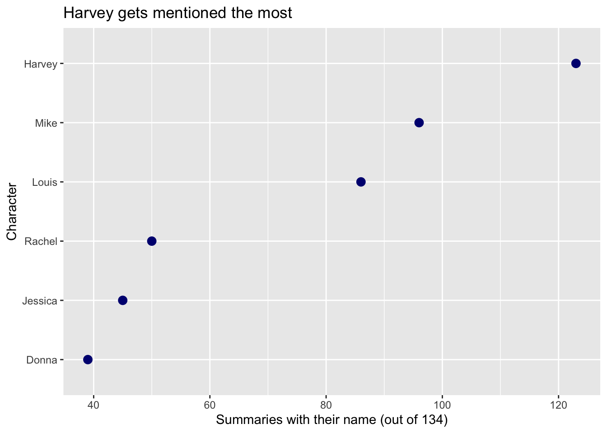
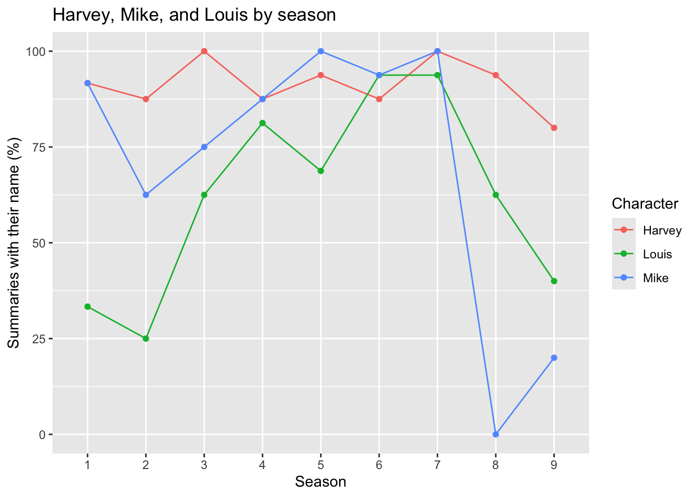

library(tidyverse)
suits <- read_csv("data/suits_episodes.csv")
suits <- suits |>
mutate(
text = str_replace_all(summary, "<[^>]+>", " "),
text = str_to_lower(text),
season = str_extract(url, "(?<=suits-)\\d+(?=x)")
)Who gets mentioned in Suits?
Who gets mentioned the most in Suits episode summaries? Does that change from season to season?
This project uses 134 episode summaries from TVmaze, covering all nine seasons. I checked for six characters by first name. A name counts once per summary, even if it shows up more than once. This tells us who the summaries mention. It doesn’t tell us how much screen time they get.
Get the data ready
suits <- suits |>
mutate(
Harvey = str_detect(text, "\\bharvey\\b"),
Mike = str_detect(text, "\\bmike\\b"),
Louis = str_detect(text, "\\blouis\\b"),
Donna = str_detect(text, "\\bdonna\\b"),
Jessica = str_detect(text, "\\bjessica\\b"),
Rachel = str_detect(text, "\\brachel\\b")
)
mentions <- suits |>
select(season, Harvey, Mike, Louis, Donna, Jessica, Rachel) |>
pivot_longer(
cols = Harvey:Rachel,
names_to = "character",
values_to = "mentioned"
)Who gets mentioned the most?
overall <- mentions |>
group_by(character) |>
summarise(episodes = sum(mentioned))
ggplot(overall, aes(x = episodes,
y = fct_reorder(character, episodes))) +
geom_point(color = "navy", size = 3) +
labs(
title = "Harvey gets mentioned the most",
x = "Summaries with their name (out of 134)",
y = "Character"
)
Harvey is first with 123 of the 134 summaries. Mike is next with 96, followed by Louis with 86. Rachel has 50, Jessica has 45, and Donna has 39. Some characters stay on the show longer, which gives them more chances to show up in a summary.
Does this change by season?
by_season <- mentions |>
filter(character %in% c("Harvey", "Mike", "Louis")) |>
group_by(season, character) |>
summarise(
episodes = n(),
mentions = sum(mentioned),
percent = 100 * mentions / episodes
)
ggplot(by_season,
aes(x = season, y = percent, color = character,
group = character)) +
geom_line() +
geom_point() +
labs(
title = "Harvey, Mike, and Louis by season",
x = "Season",
y = "Summaries with their name (%)",
color = "Character"
)
Some seasons have more episodes than others, so I used percentages to compare them. Harvey is in at least 80% of the summaries in every season. Mike has the biggest drop. He is in every summary in season 7, none in season 8, and two of the ten in season 9. Louis is at his highest in seasons 6 and 7, with 15 of the 16 summaries in each.
Where the data came from
- TVmaze contributors. (n.d.). Suits episode information and summaries. Retrieved October 14, 2026, from the episode list and episode data API.
- The CSV file uses selected fields from TVmaze’s data. The data are shared under CC BY-SA 4.0. See TVmaze’s licensing terms.